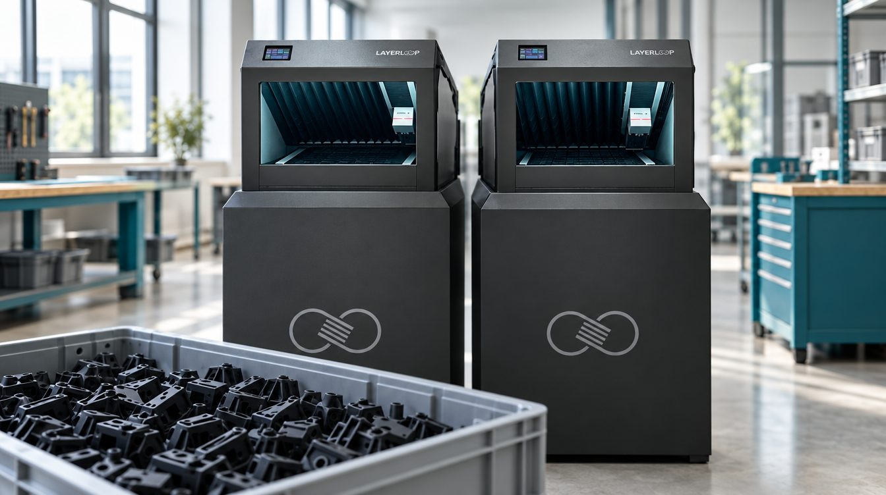

Stampa 3D a nastro: come produrre centinaia di pezzi senza un operatore
- Keyword
- stampante 3D a nastro produzione in serie
- Target
- Responsabili produzione PMI
- Prodotto
- Layerloop Next
Scaletta
- Il limite della stampa 3D tradizionale: un piano, un lotto, un operatore
- Come funziona la belt: il pezzo esce e la stampa successiva parte da sola
- Quanti pezzi in un turno notturno: un esempio di calcolo
- Quali pezzi si prestano (e quali no)
- Da dove iniziare